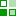
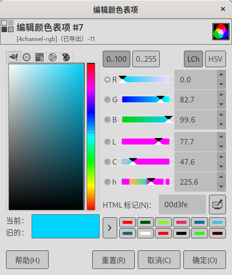
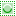
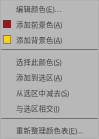
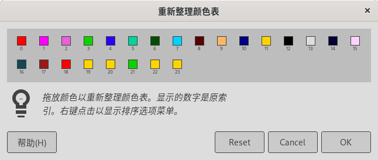

可停靠对话框→颜色表
没有快捷键。
高级用户
可停靠对话框→颜色表
颜色表对话框(  )可以编辑索引图像的颜色表。
{kind=link}
概述
索引图像中的颜色全部来自其自身的颜色表。
颜色表是针对索引图像使用，RGB图像或灰度图像不可用。(颜色表对话框显示为空)
要想在索引图像中加入新颜色，需要先把新颜色加入到颜色表中。
图案通常已经有指定的颜色，在索引图像中填充图案时，如果图案颜色不在颜色表中，那么GIMP会从颜色表中查找相近的颜色替代。
在索引图像中填充颜色时，如果使用了颜色表中没有的颜色，GIMP会从颜色表中查找相近的颜色替代。
GIMP的颜色表中最多可以有256种RGB颜色。
颜色表中现有的所有颜色都可以修改。
如果颜色表中颜色数量少于256个，那么您可以向颜色表中添加新颜色。
如果颜色表中颜色数量等于256个，那么您只能修改颜色表中现有的颜色，无法添加新色。
如果颜色表中某个颜色被修改，那么图像中对应的颜色会同时发生变化。
仅调整颜色表中颜色的编号，图像的颜色不会发生变化。
单击颜色表中的某个颜色，会在颜色表中显示该颜色的编号和HTML标记值，同时，此颜色会被设置为工具箱中的前景色。
单击颜色表中的某个颜色时如果按Ctrl键，该颜色会被设置为工具箱中的背景色。
双击颜色表中的某个颜色，会打开 编辑颜色表项 对话框，您可以修改此颜色；同时，此颜色会被设置为工具箱中的前景色。
如果你的图像使用的颜色数量非常少，那么使用索引模式，有时候可能非常方便，比如logo。
颜色表对话框选项
颜色索引：被选中颜色在颜色表中颜色的编号，最小值=0，最大值=颜色数量-1。
HTML标记：被选中颜色的16进制色值，可以在HTML语言和CSS语言中直接使用。
(
 )编辑此颜色：点击会打开 编辑颜色表项 对话框，您可以修改被选中的颜色(等同于双击被选中和颜色)：
)编辑此颜色：点击会打开 编辑颜色表项 对话框，您可以修改被选中的颜色(等同于双击被选中和颜色)：
编辑颜色表项 对话框
( )添加前景色：把当前的前景色添加到颜色表中。点击时按Ctrl键会添加背景色。(如果颜色表中的已有的颜色数量到达256个，则无法添加)
(  )选择同色像素：点击会在图像中创建一个选区，选区包含且仅包含与颜色表中被选中颜色相同颜色的像素。
{kind=link}
{kind=link}
点击时按Shift键会使创建的选区与已经存在的选区相加，相当于并集；
点击时按Ctrl键会从已经存在的选区中减去创建的选区，相当于差集；
点击时按Ctrl+Shift键会使创建的选区与已经存在的选区相交，保留共同部分，相当于交集；
颜色表对话框弹出菜单
在颜色表中选中一个颜色，然后右键点击这个色块，会显示弹出菜单：
颜色表对话框弹出菜单
编辑颜色：打开 编辑颜色表项 对话框，您可以修改被选中的颜色。
添加前景色：把工具箱中的前景色添加到颜色表中。(如果颜色表中的已有的颜色数量达到256个，则无法添加)
添加背景色：把工具箱中的背景色添加到颜色表中。(如果颜色表中的已有的颜色数量达到256个，则无法添加)
添加到选区：创建一个选区，选区包含且仅包含与颜色表中被选中颜色相同颜色的像素；同时，这个新创建的选区会与已有选区合并，等同于按Shift键同时点击( )按钮。
从选区中减去：创建一个选区，选区包含且仅包含与颜色表中被选中颜色相同颜色的像素；同时，从已有选区减去这个新创建的选区，等同于按Ctrl键同时点击( )按钮。
与选区相交：创建一个选区，选区包含且仅包含与颜色表中被选中颜色相同颜色的像素；同时，这个新创建的选区会与已有选区相交，等同于按Ctrl+Shift键同时点击( )按钮。
重新整理颜色表：对颜色表中的颜色进行排序。方法是右键点击某个色块，从弹出菜单中选择。(这里不能修改颜色，也不能添加/删除颜色)
重新整理颜色表 对话框